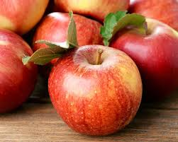
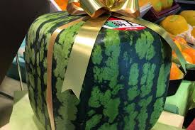
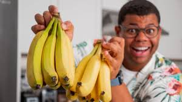

Eating an apple in the evening and at night can be a healthy choice .
Watermelon is a good source of antioxidants and nutrients.
Bananas are a good source of several vitamins and minerals, especially potassium, vitamin B6, and vitamin C .
